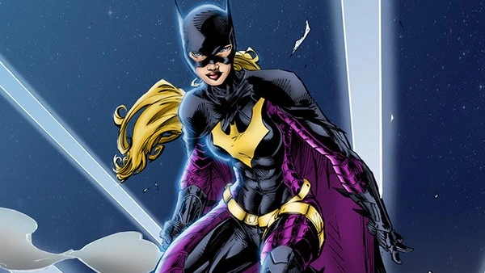

Bat-Família
Bat Família é um termo informal utilizado para descrever os aliados do Batman, o que inclui personagens que já foram treinados por ele, ou que o ajudam ou já ajudaram em algumas missões.
Batman

O patriarca da família se tornou um super-herói para combater o crime em Gotham.
Após testemunhar o assassinato de seus pais, ele treinou e adquiriu várias habilidades. Graças a sua fortuna, Bruce Wayne tem acesso a tecnologias de ponta, das quais muitas fazem parte de seu cinto de utilidades!
Alfred Pennyworth
O famoso mordomo que cuidou de Bruce Wayne após o assassinato de seus pais.
Ele serviu como uma figura paterna, professor, educador, babá, cozinheiro, entre outras funções, para o jovem órfão. Apesar de em alguns momentos parecer que Bruce ignora por completo os conselhos de Alfred, ele o considera como uma das pessoas mais importantes em sua vida!
Batgirl
Filha do comissário Gordon, Barbara se tornou Batgirl pouco depois da primeira aparição do Robin.
Após um confronto com o Coringa ela ficou paraplégica e se tornou a Oráculo, mas após receber uma cura voltou a atuar como Batgirl, só que menos misericordiosa depois de chegar tão perto da morte!
Robin Vermelho
Após a morte de Jason Todd, Tim Drake começa a ajudar o Batman, mas seus pais são ameaçados e colocados sob proteção de testemunha, o que leva Bruce Wayne a adotá-lo.
Ele era inicialmente conhecido como Robin III, mas se torna o Robin Vermelho e eventualmente deixa Gotham para liderar os Jovens Titãs!
Batwoman
Kate Kane se torna uma super-heroína após ser assaltada em Gotham e ajudada por Batman.
Ela se inspira no Cavaleiro das Trevas e com o dinheiro de sua herança e seu treinamento militar decide, também, defender sua cidade!
Mulher-Gato
Selena Kyle, a grande anti-heroína de Gotham!
Em sua relação de amor e ódio com o Batman ela acabou salvando sua vida por diversas vezes, e é uma de suas "amigas" mais antigas.
Damian Wayne
Damian Wayne é filho biológico de Batman e Talia al Ghul.
Ele se tornou o Robin ao lado de Dick Grayson.
Quando Bruce Wayne retomou seu posto como Batman e Dick de Asa Noturna, ele continuou por um tempo atuando como Robin ao lado de seu pai!
Capuz Vermelho
Jason Todd foi o segundo Robin, um órfão acolhido e treinado pelo Batman.
Ele foi morto pelo Coringa, mas ressuscitou seis meses depois e descobriu que Batman não havia vingado sua morte, no entanto ele adotou a antiga identidade do Coringa e se tornou o Capuz Vermelho.
A Salteadora
Stephanie Brown é a filha do vilão Mestre das Pistas.
Revoltada com seu pai decidiu se tornar uma heroína e foi treinada pelo Batman! No início seu objetivo era ajudar o Batman a capturar seu pai, revelando detalhes de seus planos e espalhando pistas.
Quando o Mestre das Pistas foi capturado Stephanie queria mata-lo, mas Batman a convenceu do contrário.
Asa Noturna
Dick Grayson foi o primeiro ajudante do Batman a adotar a identidade de Robin. Ao lado de Bruce Wayne, o jovem trapezista e acrobata lutava contra o crime na cidade de Gotham.
Mais tarde, já como Asa Noturna, Dick encontrou um novo lugar para chamar de lar e passou a proteger a violenta Bludhaven. O personagem tornou-se tão popular que até mesmo chegou a assumir o manto do Batman em 2009, quando Batman foi dado como morto.